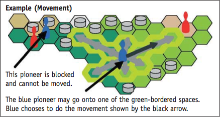
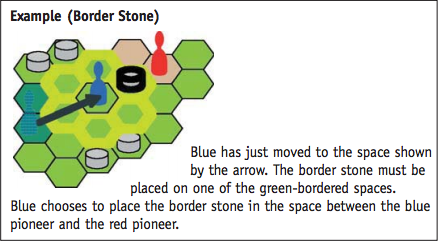
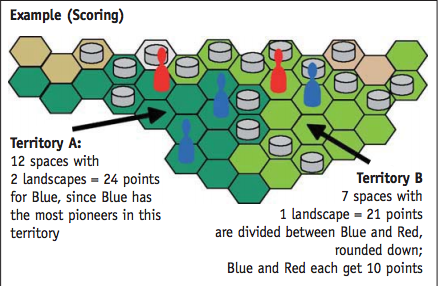

Coloque o tabuleiro no centro da mesa e as pedras em um canto. Cada jogador
escolhe uma cor e pega os pioneiros correspondentes
dependendo do número de jogadores:
Jogo para 2 jogadores: 13 pioneiros para cada
Jogo para 3 jogadores: 10 pioneiros para cada
Jogo para 4 jogadores: 8 pioneiros para cada
Os marcadores de pontuação são colocados na marca 0 do tabuleiro. Escolha
um jogador inicial.
Em ordem de turno (sentido do relógio) cada jogador coloca um dos seus
pioneiros em um espaço vazio do tabuleiro (incluindo qualquer lugar com lago); então
cada jogador coloca um segundo pioneiro e assim sucessivamente até todos os
pioneiros serem colocados no tabuleiro.
No turno do jogador, ele deve executar três ações. Somente se uma segunda ou
terceira ação não seja possível é permitido não executar aquele ação. A primeira ação
o jogador deve sempre mover um de seus pioneiros. As duas próximas ações restantes
podem ser uma combinação de mover pioneiros e/ou jogar uma pedra de borda.
Se o jogador não puder mover um pioneiro como a primeira ação, esse jogador deve
passar e o próximo jogador deve jogar.
Mover um pioneiro: É possível mover um pioneiro em uma das 6 posições possíveis
em linha reta tão longe quanto o jogador queira (mas deve ser pelo menos um espaço).
O jogador não pode pular outros pioneiros ou pedras de borda. Não é possível mover
um pioneiro para um lugar onde ele já estava.

Colocar uma pedra de borda: O jogador pode colcoar uma pedra de boarda
depois de mover um pioneiro. O jogador deve colocá-la em um dos espaços adjacentes
a um pioneiro que acabou de ser movido. Se o jogador move dois pioneiros, e para a
terceira ação, coloca uma pedra de borda, a pedra deve estar adjacente ao primeiro
ou segundo pioneiro colocado. Se o jogador somente moveu 1 pioneiro e colocou
duas pedras de borda, ambas devem estar adjacentes ao pioneiro que foi movido.

Territórios
Um território é formado logo que uma parte de uma ilha consistindo não mais do que
3 diferentes tipos de terrenos estejam cercados. Quando um jogador forma um território
colocando uma pedra de borda, a pontuação é calculada imediatamente.
Pontuação
Território com 3 diferentes terrenos = número de espaços no território
Território com 2 diferentes terrenos = 2x o número de espaços no território
Território com 1 terreno = 3x o número de espaços no território
Somente o jogador com mais pioneiros nesse território ganha os pontos. Em caso de empate,
os pontos são divididos e arredondados para baixo se necessário.
Após a pontuação, remova os pioneiros do território que acabou de ser pontuado.

O jogo termina quando:
Toda a terra está completamente dividida em territórios ou
Quando somente um jogador pode mover ou
Quando a pilha de pioneiros de um jogador acaba.
O jogador que possuir mais pontos é o vencedor.